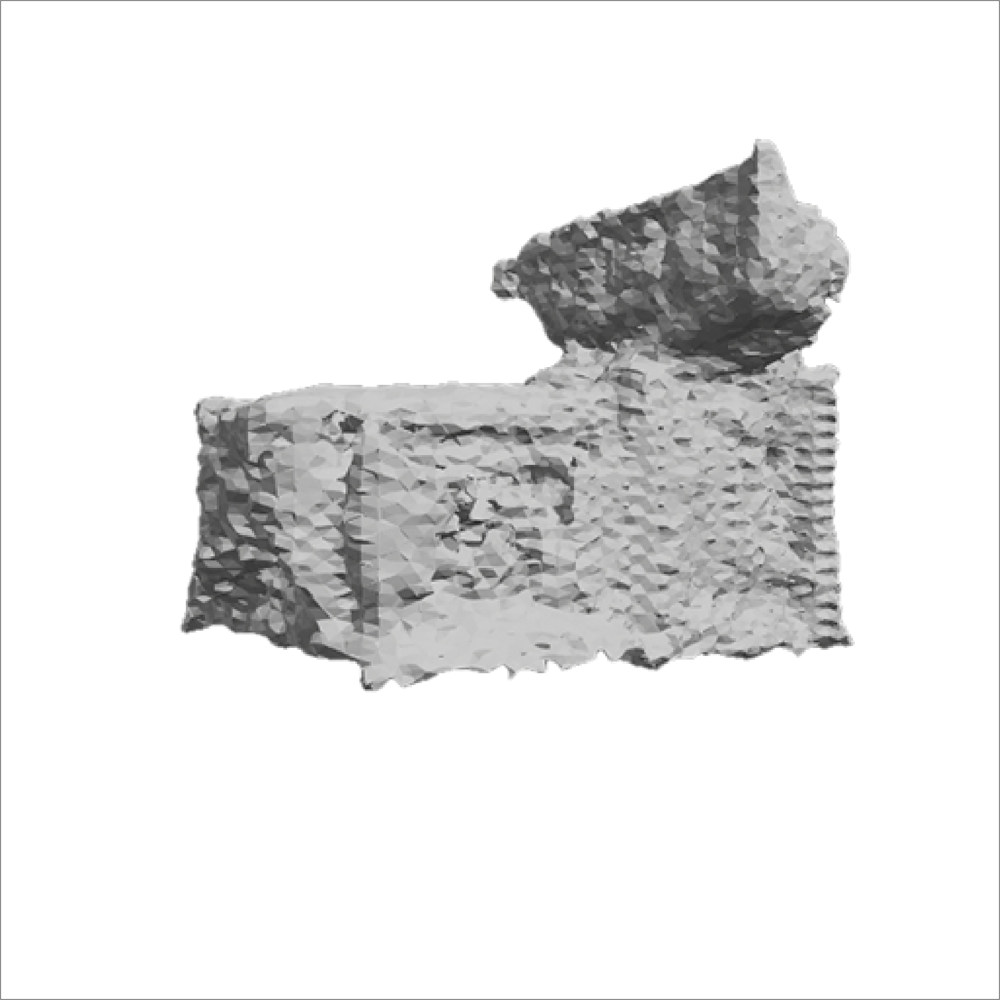
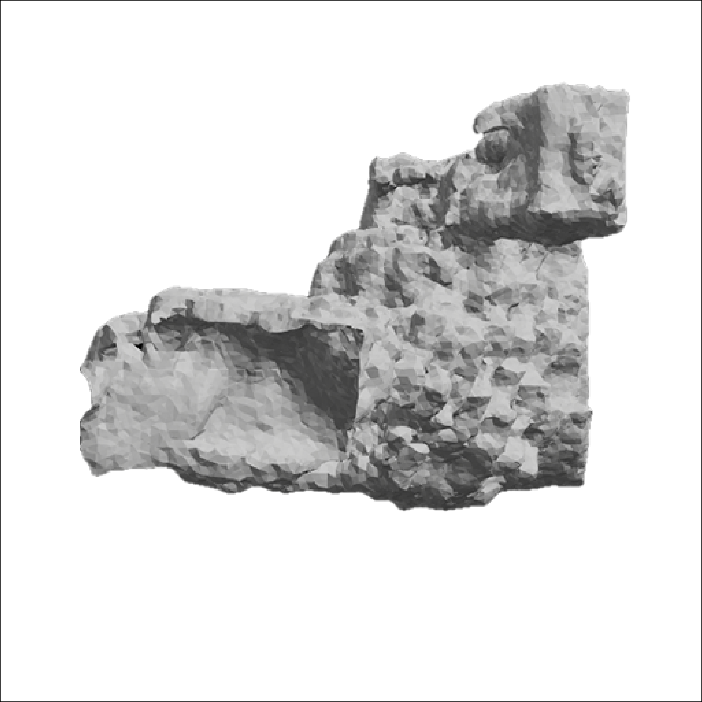

Comparison of Automatic Detail Editing Results
Ours
Auto-generated CSG
3D Synthesis

Geometry Output
Sketch-Nerf (λSDS = 1.0)
CSG Input
3D Synthesis

Geometry Output
Fantasia3D (λSDS = 1.0)
CSG Input
3D Synthesis

Geometry Output
"A stand-alone house, crafted with high-tech architecture and composite materials, features openings. It is depicted in a photorealistic style from a side view at a street corner, bathed in the glow of the northern light."